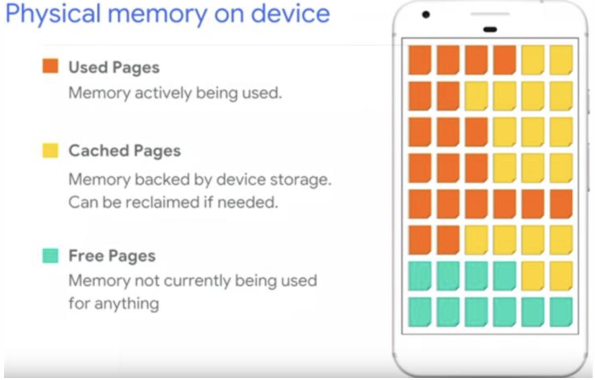
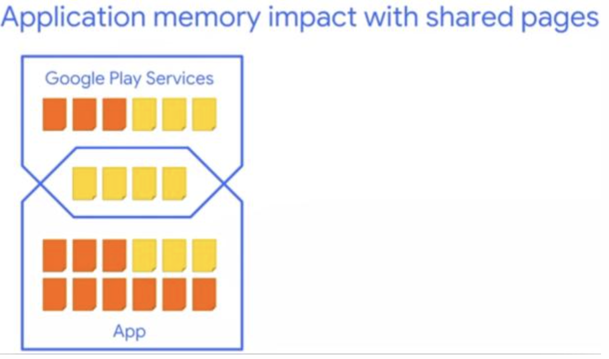
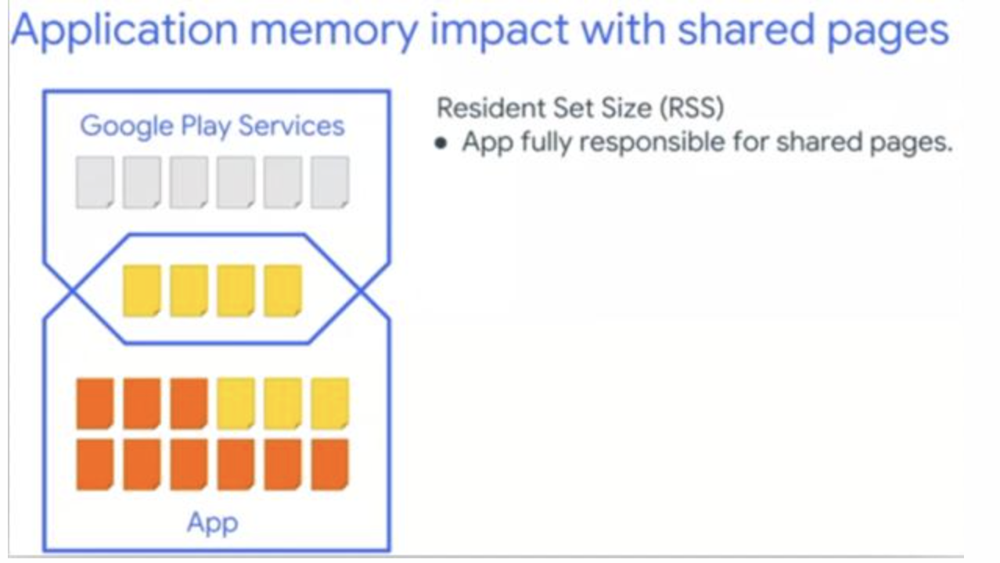
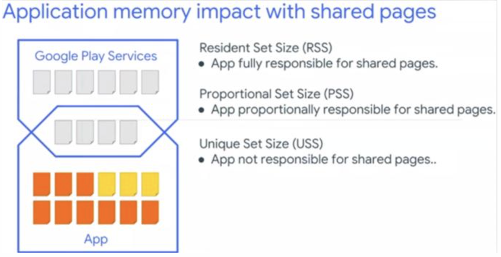

内存指标概念
USS(Unique Set Size): 物理内存，进程独占的内存
PSS(Proportional Set Size): 物理内存，PSS = USS + 按比例包含共享库
RSS(Resident Set Size): 物理内存，RSS = USS + 包含共享库
VSS(Virtual Set Size): 虚拟内存，VSS = RSS + 未分配实际物理内存
设备物理内存
设备的物理内存被分为很多页（Page），每页 4KB。不同的页用来做不同的事情。

橘色的是已使用页，黄色的是缓存页（数据在磁盘上有备份，所以 Cache Pages 是可以被回收的），绿色的是空闲页。
对于虚拟内存来说，页面共有以下几个状态：
Not Present：页面分配后未映射到物理内存；又或是作为干净页即将被内核清除。
Resident：当页面映射到物理内存后，需常驻于内存中，根据其内容是否存在文件备份，可划分为两种类型：
Clean（干净页）：仅适用于文件映射，加载到内存后不曾被更改，当内存不足时可由内核进行清除
Dirty（脏页）：匿名映射（不存在文件备份）或页面内容与磁盘不同。这种情况下无法由内核进行清除，因为会导致数据丢失，但可由Swapped机制进行交换处理
Swapped：脏页可被交换到磁盘上，当再次发生缺页中断时才被重新加载到内存；在Android中表示通过ZRAM进行了压缩，但仍会占用部分内存
RAM 分为多个“页面”。通常，每个页面为 4KB 的内存。
系统会将页面视为“可用”或“已使用”。可用页面是未使用的 RAM。已使用的页面是系统目前正在使用的 RAM，并分为以下类别：
缓存页：有存储器中的文件（例如代码或内存映射文件）支持的内存。缓存内存有两种类型：
- 私有页：由一个进程拥有且未共享
- 干净页：存储器中未经修改的文件副本，可由 kswapd 删除以增加可用内存
- 脏页：存储器中经过修改的文件副本；可由 kswapd 移动到 zRAM 或在 zRAM 中进行压缩以增加可用内存
- 共享页：由多个进程使用
- 干净页：存储器中未经修改的文件副本，可由 kswapd 删除以增加可用内存
- 脏页：存储器中经过修改的文件副本；允许通过 kswapd 或者通过明确使用 msync() 或 munmap() 将更改写回存储器中的文件，以增加可用空间
- 匿名页：没有存储器中的文件支持的内存（例如，由设置了 MAP_ANONYMOUS 标记的 mmap() 进行分配）
- 脏页：可由 kswapd 移动到 zRAM/在 zRAM 中进行压缩以增加可用内存
注意：干净页包含存在于存储器中的文件（或文件一部分）的精确副本。如果干净页不再包含文件的精确副本（例如，因应用操作所致），则会变成脏页。干净页可以删除，因为始终可以使用存储器中的数据重新生成它们；脏页则不能删除，否则数据将会丢失。
内存管理
过程

1）这是一个 2G 内存的手机，X 轴表示使用时间，Y 轴表示内存使用情况。
2）随着打开的应用越来越多，Used Pages 也越来越多，而 Cached Pages 和 Free Pages 则越来越少。
3）当 Free Pages 低于 kswapd 的阈值时，Linux 内核就会通过 kswapd 进程对 Cached Pages 进行回收。
4）当应用再次访问 Cached Pages 上的内容时，就需要从磁盘上重新加载。如果 Cached Pages 太少的话，设备就可能死机。
Low Memory Killer
1）在 Android 上我们有个机制叫 Low Memory Killer，当 Cached Pages 太少时，就会被触发。它的工作方式是挑一个进程杀掉，然后该进程占用的所有内存都会被回收。
2）如果 LMK 杀掉的是用户关心的进程，那体验就非常不好，所以我们搞了一个表（由 SystemServer 进程维护），根据这张表来决定谁先被杀掉。

1）当已用内存超过 LMK 阈值时，LMK 将从 Cached 列表底部开始杀进程。如果可用内存还是不足，那么就按照上表一种向上杀，直到 SystemServer，此时手机会直接重启。
- 分类：
Perceptible 指的是非直接交互的进程，比如后台放歌的播放器进程。
Previous 指的是切换到当前与用户交互的上一个应用进程。
Cached 指缓存的进程，可能是退至后台的应用，也可能是已经退出的应用，主要是为了实现应用间的快速切换。
3）如果低内存时，LMK 将一直处于活跃状态，具体表现就是黑屏、桌面重启，应用打不开等等
评估 App 的内存占用
物理内存追踪：Linux Kernel 将会持续跟踪每个进程使用的 Pages，所以只要对进程使用的 Pages 进行计数即可：

但实际情况远比这要复杂的多，因为有些 Pages 是进程间共享的：

RSS（Resident Set Size）：App 完全负责

3）USS（Unique Set Size）：App 无责：

但实际上，至少需要系统级别才能知道 RSS 与 USS 的情况。所以通常都是使用 PSS 来计算，这还可以避免多记或者少记 Shared Pages。
adb shell dumpsys meminfo -s [process]
内存优化建议
优化 App Java Heap：
很多内存虽然不在 Java 堆分配，但是其生命周期跟 Java 堆上分配的对象绑在了一起：

减小 apk 体积：因为很多在 apk 中占据磁盘空间的文件，在运行期也会占据内存空间：

具体：
Vss - 虚拟集大小是进程的总可访问地址空间。它显示有多少虚拟内存与进程相关联。
Rss - Resident Set Size 是分配给进程的物理页数。进程之间共享的页面被计算多次。
Pss - Proportional Set Size 采用 Rss 数，但在共享进程之间平均分配共享页面。例如，如果三个进程共享 9MB，则每个进程在 Pss 中获得 3MB。
Uss - Unique Set Size 也称为 Private Dirty，它基本上是进程内无法分页到磁盘的 RAM 量，因为它没有磁盘上的相同数据支持，并且不与任何其他进程共享
科普
私有脏内存 == 指的是 App 已用内存，以上物理内存，显示橘色的是已使用页。
私有干净内存 == 表明是 App 缓存内存，可以被 kswapd 回收的内存。